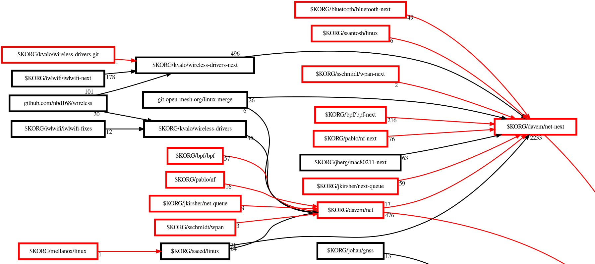

Some 5.1 development statistics
As of this writing, 12,749 non-merge changesets have been pulled into the mainline repository for the 5.1 release. That is slightly more than seen in 5.0, but still a bit lower than the other kernels released in the last few years. There were nearly 545,000 lines of code added by those changesets and 289,000 lines removed, for a net growth of 256,000 lines; this is not one of those rare development cycles where the kernel gets smaller. That work was contributed by 1,707 developers, 245 of whom made their first contribution in the 5.1 cycle.
The most active developers this time around were:
Most active 5.1 developers
By changesets Gustavo A. R. Silva 192 1.5% Yue Haibing 150 1.2% Christoph Hellwig 147 1.2% Chris Wilson 136 1.1% Colin Ian King 104 0.8% Arnd Bergmann 102 0.8% Masahiro Yamada 96 0.8% Takashi Iwai 94 0.7% Heiner Kallweit 94 0.7% Axel Lin 89 0.7% Greg Kroah-Hartman 88 0.7% Sean Christopherson 83 0.7% Jakub Kicinski 79 0.6% Bartosz Golaszewski 77 0.6% Eric Biggers 75 0.6% Bart Van Assche 74 0.6% Christophe Leroy 72 0.6% Trond Myklebust 71 0.6% Arnaldo Carvalho de Melo 70 0.5% Hans Verkuil 69 0.5%
By changed lines Oded Gabbay 48737 7.2% Jakub Kicinski 19466 2.9% Eric Biggers 17489 2.6% Christoph Hellwig 15556 2.3% Greg Kroah-Hartman 14997 2.2% Chris Wilson 12242 1.8% Shunli Wang 11046 1.6% Hans Verkuil 10509 1.6% Kaike Wan 9788 1.5% Srinivas Kandagatla 8160 1.2% Alex Deucher 7827 1.2% James Smart 7421 1.1% Larry Finger 7184 1.1% David Francis 7127 1.1% Felix Fietkau 6854 1.0% Mark Rutland 5958 0.9% Jens Axboe 5366 0.8% Claudiu Manoil 4974 0.7% Johannes Berg 4665 0.7% Neil Brown 4595 0.7%
The top contributor of changesets in 5.1 was Gustavo A. R. Silva, who continues to make general cleanups (such as marking switch fall-through cases) throughout the kernel tree. Yue Haibing was also a contributor of widespread cleanup work. Christoph Hellwig has been reworking the DMA-mapping code, improving the XFS filesystem, and more. Chris Wilson contributed a lot of work to the i915 graphics driver and Colin Ian King fixed a number of typos and coding-style issues.
Oded Gabbay reached the top of the "lines changed" column by adding the Habana AI processor driver. Jakub Kicinski reworked the BPF self tests, Eric Biggers added a lot of testing code to the crypto subsystem, and Greg Kroah-Hartman deleted the xgifb driver from the staging tree.
The kernel development community relies heavily on its testers and reviewers. The testing and review picture for 5.1 looks like this:
Test and review credits in 5.1
Tested-by Arnaldo Carvalho de Melo 49 7.6% Andrew Bowers 47 7.2% Christian Zigotzky 21 3.2% Alexander Steffen 17 2.6% Stefan Berger 16 2.5% Gustavo Pimentel 15 2.3% Aaron Brown 13 2.0% Stan Johnson 13 2.0% Marek Szyprowski 11 1.7% Nathan Chancellor 9 1.4% Jarkko Sakkinen 8 1.2% Matthias Kaehlcke 8 1.2% Keerthy 8 1.2% Linus Walleij 6 0.9% Stefan Wahren 6 0.9% Sven Auhagen 6 0.9% Geert Uytterhoeven 5 0.8% Guenter Roeck 5 0.8% Jonathan Hunter 5 0.8% Randy Dunlap 5 0.8% Tyler Baicar 5 0.8% David Safford 5 0.8%
Reviewed-by Rob Herring 208 4.4% Christoph Hellwig 86 1.8% Simon Horman 76 1.6% Tvrtko Ursulin 76 1.6% Andrew Lunn 75 1.6% Geert Uytterhoeven 74 1.6% Hannes Reinecke 65 1.4% Alex Deucher 63 1.3% Andrew Morton 62 1.3% David Sterba 60 1.3% Daniel Vetter 59 1.3% Chao Yu 55 1.2% Florian Fainelli 49 1.0% Jaroslav Kysela 49 1.0% Jakub Kicinski 48 1.0% Ville Syrjälä 47 1.0% Mika Kuoppala 45 1.0% Chris Wilson 44 0.9% Guenter Roeck 41 0.9% Laurent Pinchart 41 0.9% Darrick J. Wong 40 0.9% Mike Marciniszyn 39 0.8%
There have been times when these statistics have shown some questionable behavior — large numbers of reviews from an author's coworkers that never saw a public list, for example. This time, about the only thing that jumps out is Rob Herring's activity: he reviewed a large number of device-tree bindings from many different developers, just as one might expect a device-tree maintainer to do. Overall, the community benefits hugely from the efforts of our many testers and reviewers.
Companies
A total of 230 companies (that could be identified) supported work on 5.1 — a typical number. The most active employers this time around were:
Most active 5.1 employers
By changesets Intel 1508 11.8% (None) 897 7.0% Red Hat 857 6.7% (Unknown) 812 6.4% 671 5.3% Linaro 504 4.0% Mellanox 493 3.9% Huawei Technologies 487 3.8% IBM 404 3.2% SUSE 350 2.7% AMD 340 2.7% Linux Foundation 298 2.3% Renesas Electronics 280 2.2% (Consultant) 266 2.1% NXP Semiconductors 230 1.8% ARM 205 1.6% Oracle 202 1.6% 180 1.4% Bootlin 176 1.4% Code Aurora Forum 159 1.2%
By lines changed Intel 76848 11.4% Habana Labs 52429 7.8% (None) 36930 5.5% 36916 5.5% (Unknown) 32249 4.8% Red Hat 31598 4.7% Linaro 29175 4.3% AMD 26705 4.0% Mellanox 24222 3.6% (Consultant) 24089 3.6% Netronome Systems 23691 3.5% 18639 2.8% IBM 18529 2.7% NXP Semiconductors 17957 2.7% Linux Foundation 16283 2.4% ARM 15369 2.3% MediaTek 14508 2.1% SUSE 13871 2.1% Broadcom 11564 1.7% Renesas Electronics 8718 1.3%
One obvious newcomer here is Habana Labs, which contributed a driver for its AI coprocessor to the kernel; otherwise there are not a lot of surprises in this table.
Paths
One of the interesting things that can be determined, with some effort, from the kernel's Git repository is the path each commit took into the mainline — which other Git trees did it go through first? The information is not perfect; in particular, fast-forward merges will cause the provenance of a commit to be lost. But such merges are relatively rare in the kernel community (which lacks the fear of merges seen in many other projects), so an interesting picture can be created.
The entire picture is rather large to embed in an article; it can be seen on this page. The portion corresponding to the networking tree (the biggest single source of commits flowing into the mainline) is shown below:

If a link between two git trees uses signed tags, it is shown in black; otherwise it appears in red. As can be seen, a number of significant trees are still not using signed tags in pull requests to the mainline; these include networking and, ironically, the security and crypto trees. The rule applied by Linus Torvalds is to require signed tags on any pull request that is not hosted on kernel.org; the diagram shows that he is adhering to that. Many of the other maintainers feeding into the mainline, though, do not enforce the same rule, so commits that originate on sites like GitHub are still being pulled in without signatures.
The overall picture shows that, while there are more subsystems using
multiple levels of maintainers, an awful lot of code still goes directly to
Torvalds. The system appears to work, though; Torvalds has shown few signs
of stress in recent years. The same could be said of the development
community in general. While some maintainers are clearly stressed, the
system as a whole continues to function smoothly, producing kernels with
thousands of changes on a predictable nine or ten-week schedule.
| Index entries for this article | |
|---|---|
| Kernel | Releases/5.1 |
Posted Apr 26, 2019 7:46 UTC (Fri)
by blackwood (guest, #44174)
[Link] (2 responses)
Posted Apr 26, 2019 7:50 UTC (Fri)
by blackwood (guest, #44174)
[Link]
Posted Apr 26, 2019 15:41 UTC (Fri)
by samlh (subscriber, #56788)
[Link]
Posted Apr 26, 2019 16:47 UTC (Fri)
by moorray (guest, #54145)
[Link] (1 responses)
Posted May 9, 2019 20:35 UTC (Thu)
by scientes (guest, #83068)
[Link]
But getting it published quickly so others can see it is often important.
Some 5.1 development statistics
Some 5.1 development statistics
Some 5.1 development statistics
Some 5.1 development statistics
A major reason to review the patches internally first, is that the quality is not always great. We probably don't need 10 upstream maintainers/reviewers pointing out to their team members that they forgot a kfree() in a public forum, just because of the email volume.
As far as the reviews go - I certainly want the employees who spend their time reviewing code see their contribution acknowledged. The maintainer above me knows the people and the value of their tags, regardless of the employer.
Some 5.1 development statistics